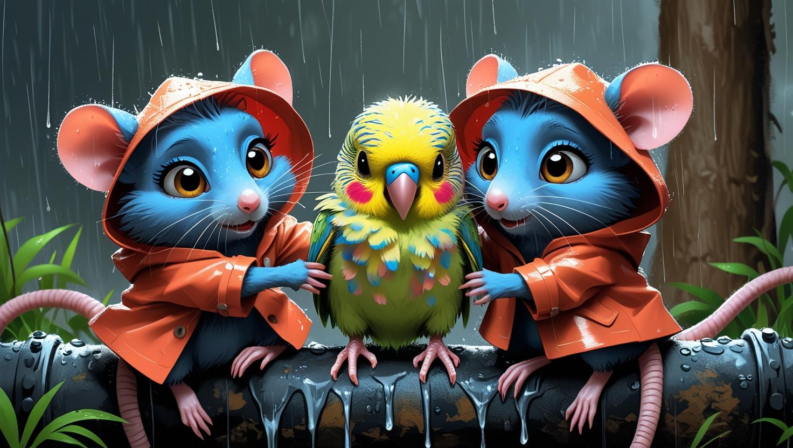

🌧️ ¿De dónde vino este pequeño amigo? 💖
Un encuentro bajo la lluvia
Mucho tiempo atrás, en una noche lluviosa, algo extraño ocurrió en las alcantarillas. 🌧️ ¡Un lorito bebé, temblando y helado, cayó desde un sumidero!
Unas ratas amables lo encontraron. Lo envolvieron en una manta, le dieron leche tibia y, poco a poco, Periquito recuperó sus colores y su alegría. ¡Aunque siempre se quedó pequeñito!
Cerca de esa familia vivía Kira. Desde el primer día, se hicieron inseparables. 🎭 Jugaban, cantaban y soñaban con llenar el mundo de alegría. ¡Y ese sueño estaba a punto de hacerse realidad!
✨ ¿Qué aventura les espera ahora? ¡Descúbrelo! ✨
(Haz clic para descubrir más)
Escuchar cuento